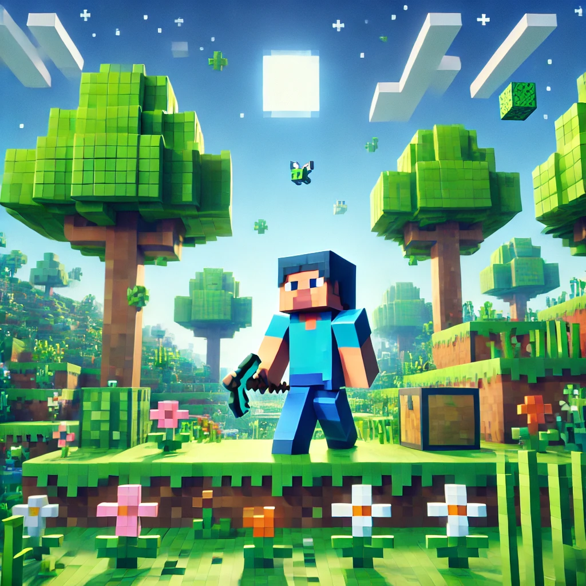
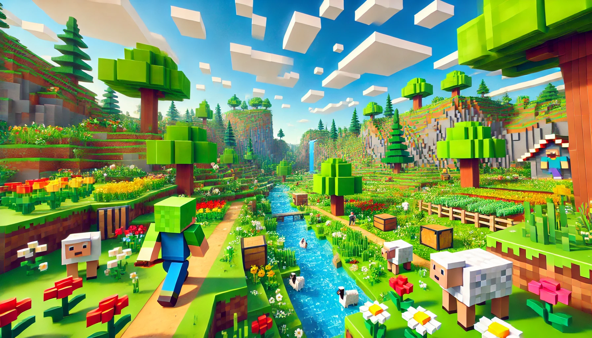
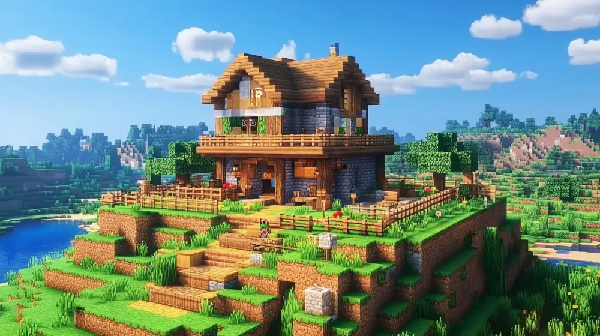

Minecraft
Minecraft

A Minecraft egy világhí-
rű játék, fejleszti a kreativitást.
Érdekesség: A Mojang 2011.-ben adta ki

A Minecraft egy kreatív játek melyben lehet túlélni és építkezni.
Érdekesség:
A Minecraft első neve "Cave Game" volt
